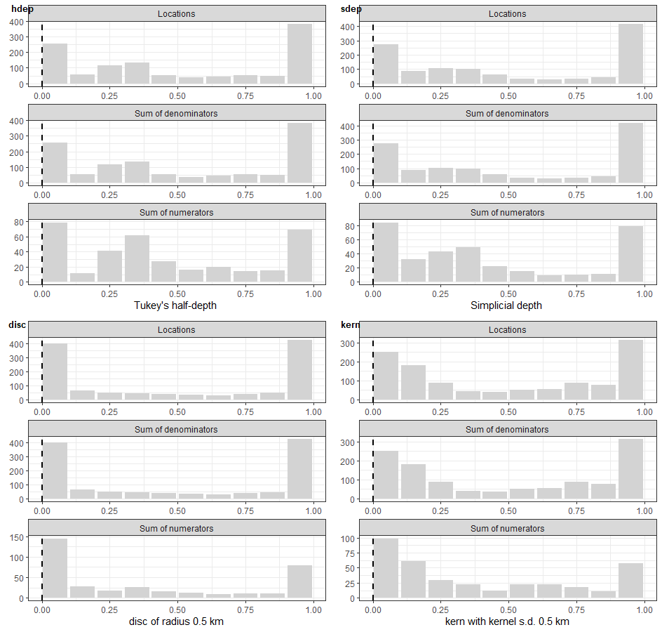

Use Case 05: Analysis of trials (including methods for analysing contamination)
Usecase5.RmdThe CRTanalysis()
function is a wrapper for different statistical analysis packages that
can be used to analyse either simulated or real trial datasets. It is
designed for use in simulation studies of different analytical methods
for spatial CRTs by automating the data processing and selecting some
appropriate analysis options. It does not replace conventional use of
these packages. Real field trials very often entail complications that
are not catered for any of the analysis options in
CRTanalysis() and it does not aspire to carry out the full
analytical workflow for a trial. It can be used as part of a wider
workflow. In particular the usual object output by the statistical
analysis package constitutes the model_object element
within the CRTanalysis object generated by
CRTanalysis(). This can be accessed by the usual methods
(e.g predict(), summary(),
plot()) which may be needed for diagnosing errors,
assessing goodness of fit, and for identifying needs for additional
analyses.
Statistical Methods
The options that can be specified using the method
parameter in the function call are:
-
method = "T"summarises the outcome at the level of the cluster, and uses 2-sample t-tests to carry out statistical significance tests of the effect, and to compute confidence intervals for the effect size. The t.test function in thestatspackage is used. -
method = "GEE"uses Generalised Estimating Equations to estimate the efficacy in a model with iid random effects for the clusters. An estimate of the intracluster correlation (ICC) is also provided. This uses calls to the geepack package. -
method = "LME4"fits linear (for continuous data) or generalized linear (for counts and proportions) mixed models with iid random effects for clusters in lme4. -
method = "MCMC"uses Markov chain Monte Carlo simulation in package jagsUI, which calls r-JAGS. -
method = "INLA"uses approximate Bayesian inference via the R-INLA package. This provides functionality for geostatistical analysis, which can be used for geographical mapping of model outputs (as illustrated in . INLA spatial analysis requires a prediction mesh. This can be generated usingCRTspat::new_mesh(). This can be computationally expensive, so it is recommended to compute the mesh just once for each dataset.
All these analysis methods can be used to carry out a simple
comparision of outcomes between trial arms. Each offers different
additional functionality, and has its own limitations (see Table 5.1).
Some of these limitations are specific to the options offered within
CRTanalysis(), which does not embrace the full range of
options of the packages that are ‘wrapped’. These are specified using
the method argument of the function.
Table 5.1. Available statistical methods
method |
Package | What the CRTanalysis() implementation offers |
Limitations (as implemented) |
|---|---|---|---|
T |
t.test | P-values and confidence intervals for efficacy based on comparison of cluster means | No analysis of contamination or degree of clustering |
GEE |
geepack | Interval estimates for efficacy and Intra-cluster correlations | No analysis of contamination or degree of clustering |
LME4 |
lme4 | Analysis of contamination | No geostatistical analysis |
INLA |
INLA | Analysis of contamination, geostatistical analysis and spatially structured outputs | Computationally intensive |
MCMC |
jagsUI | Interval estimates for contamination parameters | Identifiability issues and slow convergence are possible |
For the analysis of proportions, the outcome in the control arm is estimated as: \(\hat{p}_{C} = \frac{1}{1 + exp(-\beta_1)}\), in the intervention arm as \(\hat{p}_{I} = \frac{1}{1 + exp(-\beta_1-\beta_2)}\), and the efficacy is estimated as \(\tilde{E}_{s} = 1- \frac{\tilde{p}_{I}}{\tilde{p}_{C}}\) where \(\beta_1\) is the intercept term and \(\beta_2\) the incremental effect associated with the intervention.
summary("<analysis>"") is used to view the key
results of the trial. To display the output from the statistical
procedure that is called, try <analysis>$model_object
or summary("<analysis>$model_object").
library(CRTspat)
example <- readdata("exampleCRT.txt")
analysisT <- CRTanalysis(example, method = "T")
summary(analysisT)## =====================CLUSTER RANDOMISED TRIAL ANALYSIS =================
## Analysis method: T
## Link function: logit
## Model formula: arm + (1 | cluster)
## No modelling of contamination
## Estimates: Control: 0.364 (95% CL: 0.286 0.451 )
## Intervention: 0.21 (95% CL: 0.147 0.292 )
## Efficacy: 0.423 (95% CL: 0.208 0.727 )
##
## P-value (2-sided): 0.006879064
analysisT$model_object##
## Two Sample t-test
##
## data: lp by arm
## t = 2.9818, df = 22, p-value = 0.006879
## alternative hypothesis: true difference in means between group control and group intervention is not equal to 0
## 95 percent confidence interval:
## 0.2332638 1.2989425
## sample estimates:
## mean in group control mean in group intervention
## -0.5561662 -1.3222694Assessing model fit
The model = "LME4" option outputs the deviance of the
model and the Akaike information criterion (AIC), which can be used to
select the best fitting model. The deviance information criterion (DIC)
and Bayesian information criterion (BIC) perform the same role for the
Bayesian methods ("INLA", and "MCMC"). The
comparison of results with cfunc = "X" and
cfunc = "Z" is used to assess whether the intervention
effect is likely to be due to chance. With method = "T",
cfunc = "X" provides a significance test of the
intervention effect directly. The models with contamination (see below)
can be compared by that with cfunc = "X" to evaluate
whether contamination has led to an important bias.
Contamination (spillover)
CRTanalysis() provides options for analysing
contamination between arms, or spillover effects either:
by assuming the effects to be a function of Euclidean
distance to the opposing arm of the trial. The functional forms for
this relationship is specified by the value of cfunc (Table
5.2). In addition, models that do not consider contamination can be
fitted using options Z and X. These are
included both to allow conventional analyses, and also to enable model
selection using the Akaike information criterion (AIC) or Bayesian
information criterion (BIC) and likelihood ratio tests.
Table 5.2. Available contamination functions
cfunc |
Description | Formula for \(P\left( d \right)\) | Compatible method(s) |
|---|---|---|---|
Z |
No intervention effect | \(P\left( d \right) = \ 0\ \) |
GEE LME4 INLA
MCMC
|
X |
Simple intervention effect | \(\begin{matrix} P\left( d \right) = \ 0\ for\ d\ < \ 0 \\ P\left( d \right) = \ 1\ for\ d\ > \ 0 \\ \end{matrix}\ \) |
T GEE LME4 INLA
MCMC
|
L |
inverse logistic (sigmoid) | \(P\left( d \right) = \ \frac{1}{\left( 1\ + \ exp\left( - \beta d \right) \right)}\) |
LME4 INLA MCMC
|
P |
inverse probit (error function) | \(P\left( d \right) = \frac{1}{2}\left( 1\ + \ erf\left( \frac{\text{βd}}{\sqrt{2}} \right) \right)\) |
LME4 INLA MCMC
|
S |
piecewise linear | \(\begin{matrix} P\left( d \right) = \ 0\ for\ d\ < \ - \beta/2\ \ \ \ \ \ \ \ \ \ \ \ \ \ \ \ \ \ \ \ \ \ \ \ \\ P\left( d \right) = \ \left(\beta/2\ + \ d \right)/\beta\ for\ - \beta/2 < d\ < \ \beta/2\\ P\left( d \right) = \ 1\ for\ d\ > \ \beta/2\ \ \ \ \ \ \ \ \ \ \ \ \ \ \ \ \ \ \ \ \ \ \ \ \ \ \ \ \ \\ \end{matrix}\ \) |
LME4 INLA MCMC
|
R |
rescaled linear | \(P\left( d \right) =\frac{d\ -\ min(d)}{max(d)\ -\ min(d)}\) |
LME4 INLA MCMC
|
cfunc options P, L and
S (and also measure options disc)
lead to non-linear models in which the contamination scale parameter
beta must be estimated. This is done by selecting
beta using a one-dimensional optimisation of the goodness
of fit of the model in stats::optimize().
The different values for cfunc lead to the fitted curves
shown in Figure 5.1. The light blue shaded part of the plot corresponds
to the contamination interval in those cases where this is
estimated.
analysisLME4_Z <- CRTanalysis(example, method = "LME4", cfunc = "Z")
summary(analysisLME4_Z)## =====================CLUSTER RANDOMISED TRIAL ANALYSIS =================
## Analysis method: LME4
## Link function: logit
## Model formula: (1 | cluster)
## No comparison of arms
## Estimates: Control: 0.285 (95% CL: NA )
## deviance: 1387.609
## AIC : 1391.609
analysisLME4_X <- CRTanalysis(example, method = "LME4", cfunc = "X")
summary(analysisLME4_X)## =====================CLUSTER RANDOMISED TRIAL ANALYSIS =================
## Analysis method: LME4
## Link function: logit
## Model formula: arm + (1 | cluster)
## No modelling of contamination
## Estimates: Control: 0.367 (95% CL: 0.291 0.449 )
## Intervention: 0.215 (95% CL: 0.162 0.283 )
## Efficacy: 0.414 (95% CL: 0.165 0.584 )
## deviance: 1379.898
## AIC : 1385.898
analysisLME4_P <- CRTanalysis(example, method = "LME4", cfunc = "P")
summary(analysisLME4_P)## =====================CLUSTER RANDOMISED TRIAL ANALYSIS =================
## Analysis method: LME4
## Link function: logit
## Measure of distance or surround: Nearest discordant location
## Model formula: pvar + (1 | cluster)
## Error function model for contamination
## Estimates: Control: 0.417 (95% CL: 0.332 0.508 )
## Intervention: 0.186 (95% CL: 0.138 0.251 )
## Efficacy: 0.553 (95% CL: 0.326 0.7 )
## Contamination range(km): 1.73 (95% CL: 1.7 1.74 )
## % locations contaminated: 68.2 (95% CL: 67.7 68.8 %)
## deviance: 1374.215
## AIC : 1382.215 including penalty for the contamination scale parameter
analysisLME4_L <- CRTanalysis(example, method = "LME4", cfunc = "L")
summary(analysisLME4_L)## =====================CLUSTER RANDOMISED TRIAL ANALYSIS =================
## Analysis method: LME4
## Link function: logit
## Measure of distance or surround: Nearest discordant location
## Model formula: pvar + (1 | cluster)
## Sigmoid (logistic) function for contamination
## Estimates: Control: 0.415 (95% CL: 0.328 0.505 )
## Intervention: 0.187 (95% CL: 0.135 0.251 )
## Efficacy: 0.55 (95% CL: 0.327 0.701 )
## Contamination range(km): 1.78 (95% CL: 1.76 1.8 )
## % locations contaminated: 70 (95% CL: 69.5 70.8 %)
## deviance: 1374.201
## AIC : 1382.201 including penalty for the contamination scale parameter
analysisLME4_S <- CRTanalysis(example, method = "LME4", cfunc = "S")
summary(analysisLME4_S)## =====================CLUSTER RANDOMISED TRIAL ANALYSIS =================
## Analysis method: LME4
## Link function: logit
## Measure of distance or surround: Nearest discordant location
## Model formula: pvar + (1 | cluster)
## Piecewise linear function for contamination
## Estimates: Control: 0.39 (95% CL: 0.313 0.472 )
## Intervention: 0.197 (95% CL: 0.146 0.261 )
## Efficacy: 0.493 (95% CL: 0.281 0.646 )
## Contamination range(km): 1.65 (95% CL: 1.64 1.65 )
## % locations contaminated: 64.6 (95% CL: 64.6 64.8 %)
## deviance: 1374.44
## AIC : 1382.44 including penalty for the contamination scale parameter
analysisLME4_R <- CRTanalysis(example, method = "LME4", cfunc = "R")
summary(analysisLME4_R)## =====================CLUSTER RANDOMISED TRIAL ANALYSIS =================
## Analysis method: LME4
## Link function: logit
## Measure of distance or surround: Nearest discordant location
## Model formula: pvar + (1 | cluster)
## Rescaled linear function for contamination
## Estimates: Control: 0.584 (95% CL: 0.387 0.763 )
## Intervention: 0.116 (95% CL: 0.0587 0.214 )
## Efficacy: 0.799 (95% CL: 0.473 0.921 )
## Contamination range(km): 6.33 (95% CL: 6.14 6.43 )
## % locations contaminated: 99.6 (95% CL: 98.7 99.7 %)
## deviance: 1378.711
## AIC : 1384.711
p0 <- plotCRT(analysisLME4_Z, map = FALSE)
p1 <- plotCRT(analysisLME4_X, map = FALSE)
p2 <- plotCRT(analysisLME4_P, map = FALSE)
p3 <- plotCRT(analysisLME4_L, map = FALSE)
p4 <- plotCRT(analysisLME4_S, map = FALSE)
p5 <- plotCRT(analysisLME4_R, map = FALSE)
library(cowplot)
plot_grid(p0, p1, p2, p3, p4, p5, labels = c('Z', 'X', 'P', 'L', 'S', 'R'), label_size = 10, ncol = 2)

Fig 5.1 Fitted curves for the
example dataset with different options for cfunc
The piecewise linear contamination function,
cfunc = "S", is only linear on the scale of the linear
predictor. When used in a logistic model, as here, the transformation
via the inverse of the link function leads to a slightly curved plot
(Figure 5.1S). The rescaled linear function, cfunc = "R",
is provided as a comparator and for use with measure values
other than measure = "nearestDiscord" see below (it should
not be used to estimate the contamination range).
The full set of different cfunc options are available
for each of model options "LME4", "INLA", and
"MCMC". The performance of all these different models has
not yet been thoroughly investigated. The analyses of Multerer
et al. (2021b) found that that a model equivalent to
method = "MCMC", cfunc = "L" gave estimates of
efficacy with low bias, even in simulations with considerable
contamination.
Contamination can also be analysed by assuming the effect size to
be a function of the number of intervened locations in the surroundings
of the location Anaya-Izquierdo
& Alexander(2020). Several different functions are available
(Table 5.3). These are specified by the measure
parameter.
Table 5.3. Available surround functions
measure |
Description | Details |
|---|---|---|
nearestDiscord |
Distance to nearest discordant location | The default. This is used for analyses by distance (see above) |
hdep |
Tukey’s half-depth | Algorithm of Rousseeuw & Ruts(1996) |
sdep |
Simplicial depth | Algorithm of Rousseeuw & Ruts(1996) |
disc |
disc | The number of intervened locations within the specified radius (excluding the location itself) as described by Anaya-Izquierdo & Alexander(2020) |
The compute_distance()
function is provided to compute these quantities, so that they can be
described, compared, and analysed independently of
CRTanalysis(). Users can also devise other measures of
surround or distance, add them to a trial data frame and
specify them using measure.
examples <- compute_distance(trial = example$trial, measure = "all", radius = 0.15)
ps1 <- plotCRT(examples, measure = "hdep", legend.position = c(0.8, 0.8))
ps2 <- plotCRT(examples, measure = "sdep")
ps3 <- plotCRT(examples, measure = "disc")
plot_grid(ps1, ps2, ps3, labels = c('hdep', 'sdep', 'disc'), label_size = 10, ncol = 2)

Fig 5.2 Stacked bar plots for
different surrounds
If measure is assigned a value of either
hdep, sdep, or disc, then
cfunc = "R" is used and the overall effect size is computed
by comparing the fitted values of the model for a surround value of zero
with that of the maximum of the surround in the data. If
measure = "disc" the radius is estimated in the same way as
beta (see above Table 5.2).
examples_hdep <- CRTanalysis(examples, method = "LME4", measure = "hdep")## *** using linear contamination function ***
summary(examples_hdep)## =====================CLUSTER RANDOMISED TRIAL ANALYSIS =================
## Analysis method: LME4
## Link function: logit
## Measure of distance or surround: Tukey's half-depth
## Model formula: pvar + (1 | cluster)
## Rescaled linear function for contamination
## Estimates: Control: 0.317 (95% CL: 0.249 0.395 )
## Intervention: 0.179 (95% CL: 0.0873 0.327 )
## Efficacy: 0.437 (95% CL: -0.145 0.748 )
## deviance: 1385.079
## AIC : 1391.079
ps4 <- plotCRT(examples_hdep,legend.position = c(0.8, 0.8))
examples_sdep <- CRTanalysis(examples, method = "LME4", measure = "sdep")## *** using linear contamination function ***
summary(examples_sdep)## =====================CLUSTER RANDOMISED TRIAL ANALYSIS =================
## Analysis method: LME4
## Link function: logit
## Measure of distance or surround: Simplicial depth
## Model formula: pvar + (1 | cluster)
## Rescaled linear function for contamination
## Estimates: Control: 0.319 (95% CL: 0.251 0.394 )
## Intervention: 0.193 (95% CL: 0.111 0.312 )
## Efficacy: 0.397 (95% CL: -0.0602 0.676 )
## deviance: 1384.584
## AIC : 1390.584
ps5 <- plotCRT(examples_sdep)
examples_disc <- CRTanalysis(examples, method = "LME4", measure = "disc")## *** using linear contamination function ***
summary(examples_disc)## =====================CLUSTER RANDOMISED TRIAL ANALYSIS =================
## Analysis method: LME4
## Link function: logit
## Measure of distance or surround: disc of radius 0.262 km
## Model formula: pvar + (1 | cluster)
## Rescaled linear function for contamination
## Estimates: Control: 0.355 (95% CL: 0.292 0.423 )
## Intervention: 0.0986 (95% CL: 0.0494 0.188 )
## Efficacy: 0.721 (95% CL: 0.418 0.87 )
## deviance: 1375.41
## AIC : 1383.41 including penalty for the contamination scale parameter
ps6 <- plotCRT(examples_disc)
plot_grid(ps4, ps5, ps6, labels = c('hdep', 'sdep', 'disc'), label_size = 10, ncol = 2)

Fig 5.3 Fitted curves for the
example dataset with different surrounds
Geostatistical models and mapping results
To carry out a geostatistical analysis with
method = "INLA" a prediction mesh is needed. By default a
very low resolution mesh is created (creating a high resolution mesh is
computationally expensive). To create a 100m INLA mesh for
<MyTrial>, use:
mesh <- new_mesh(trial = <MyTrial> , pixel = 0.1)